Grade 3 — Multiplicative reasoning
Multiplication, division and fractions. This guide contains 50 chapter-level worked lessons, review questions, answers, and linked illustrations.
Contents — select a chapter
Multiplication tables
Multiplication is repeated addition and can be reorganized.
7 × 6 = 42.
- 6 + 6 + 6 + 6 + 6 + 6 + 6 = 42
- Use known facts for speed.
8 * 7
Hint: 8 groups of 7.
Show answer and verify
56
Check the units, inputs and intermediate steps. Different solution methods may be valid.
Division facts
Division undoes multiplication: if a × b = c then c ÷ a = b.
36 ÷ 4 = 9 because 4 × 9 = 36.
- Use related facts
- Confirm with multiplication.
63 / 9
Hint: What times nine equals sixty-three?
Show answer and verify
7
Check the units, inputs and intermediate steps. Different solution methods may be valid.
Remainders
A remainder is the amount left after forming full equal groups.
17 ÷ 5 = 3 remainder 2.
- 5 × 3 = 15
- 17 − 15 = 2.
What is the remainder when 23 is divided by 4?
Hint: 4 × 5 = 20.
Show answer and verify
3
Check the units, inputs and intermediate steps. Different solution methods may be valid.
Area of rectangles
Rectangle area = length × width in square units.
A rectangle 5 by 3 has area 15.
- Count rows and columns
- Multiply 5 × 3 = 15.
Find area of 8 by 4 rectangle.
Hint: Multiply length and width.
Show answer and verify
32
Check the units, inputs and intermediate steps. Different solution methods may be valid.
Perimeter
Perimeter is the distance around a closed shape.
A 6 by 4 rectangle has perimeter 20.
- Opposite sides of a rectangle match
- Add 6 + 4 + 6 + 4 = 20.
Perimeter of a 7 by 5 rectangle?
Hint: Use 2 × (length + width).
Show answer and verify
24
Check the units, inputs and intermediate steps. Different solution methods may be valid.
Unit fractions
Understand the denominator as the number of equal parts of a whole.
3/4 means three of four equal parts.
- Divide into four
- Shade three
- Each is a quarter.
What is 3/4 of 20?
Hint: One quarter is five.
Show answer and verify
15
Check the units, inputs and intermediate steps. Different solution methods may be valid.
Equivalent fractions
Multiplying numerator and denominator by the same nonzero number preserves value.
1/2 = 2/4 = 3/6.
- Multiply top and bottom by 2 or 3
- The ratio stays the same.
What is 2/3 of 18?
Hint: Divide by three then multiply by two.
Show answer and verify
12
Check the units, inputs and intermediate steps. Different solution methods may be valid.
Round to nearest ten
Use the ones digit: 5–9 round up; 0–4 round down.
Round 67 to nearest ten.
- Ones digit 7
- Round upward
- 70.
Round 143 to nearest ten.
Hint: Ones digit three rounds down.
Show answer and verify
140
Check the units, inputs and intermediate steps. Different solution methods may be valid.
Elapsed time
Determine how many minutes pass between events.
From 2:15 to 3:00 is 45 minutes.
- 15 to 60 is 45
- Keep units in minutes.
From 10:20 to 11:00, how many minutes?
Hint: Subtract 20 from 60.
Show answer and verify
40
Check the units, inputs and intermediate steps. Different solution methods may be valid.
Read simple graphs
A bar graph visualizes counts in categories.
If blue has 8 and red has 5, blue exceeds red by 3.
- Read each bar height
- Subtract 8 − 5 = 3.
A bar shows 12 books and another 7. Find the difference.
Hint: Compare two values by subtraction.
Show answer and verify
5
Check the units, inputs and intermediate steps. Different solution methods may be valid.
Multiplication fact families
Multiplication fact families: Multiplication counts equal groups and can be visualized as rectangular arrays. Use the distributive property to break a product into smaller products.
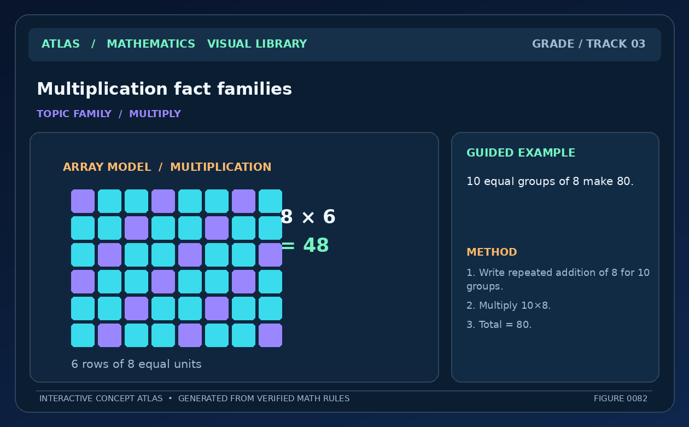
10 equal groups of 8 make 80.
- Write repeated addition of 8 for 10 groups.
- Multiply 10×8.
- Total = 80.
What is 14×8?
Hint: Use an area model or multiply each part.
Show answer and verify
112
Check the units, inputs and intermediate steps. Different solution methods may be valid.
Multiplication by zero and one
Multiplication by zero and one: Multiplication counts equal groups and can be visualized as rectangular arrays. Use the distributive property to break a product into smaller products.
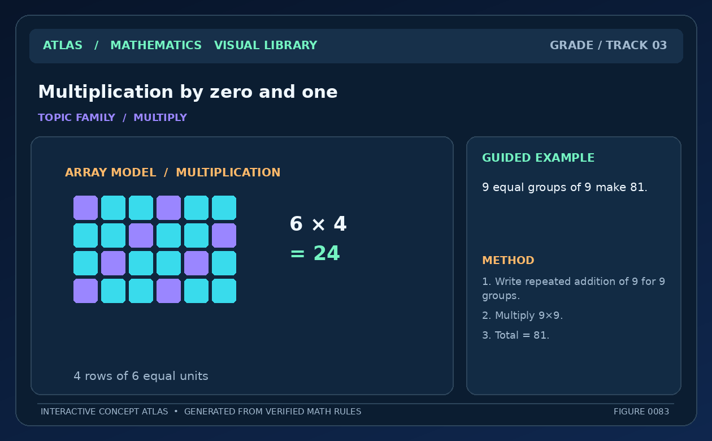
9 equal groups of 9 make 81.
- Write repeated addition of 9 for 9 groups.
- Multiply 9×9.
- Total = 81.
What is 15×9?
Hint: Use an area model or multiply each part.
Show answer and verify
135
Check the units, inputs and intermediate steps. Different solution methods may be valid.
Multiplication by 3 and 4
Multiplication by 3 and 4: Multiplication counts equal groups and can be visualized as rectangular arrays. Use the distributive property to break a product into smaller products.
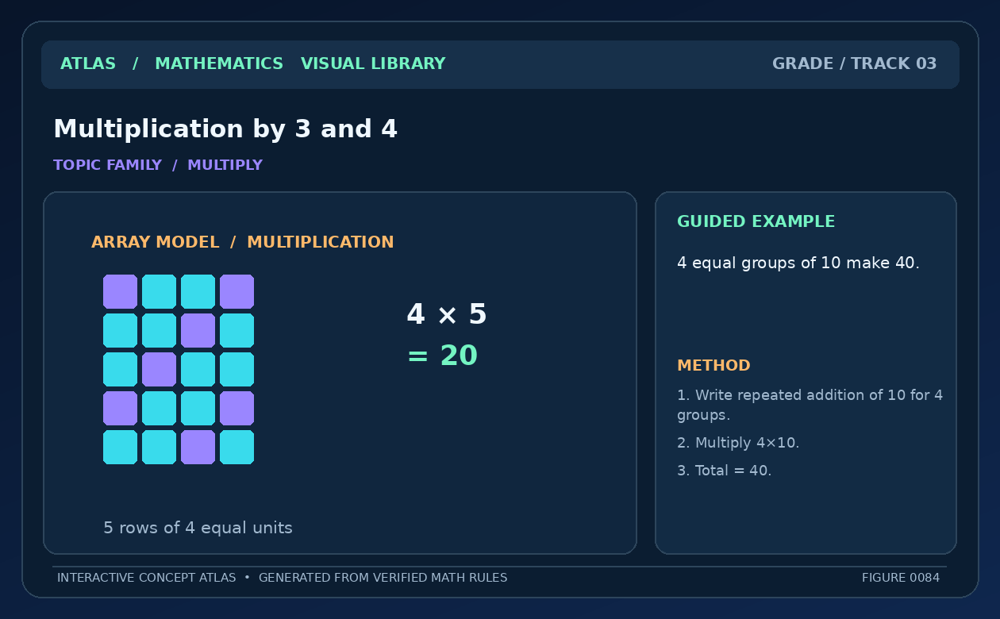
4 equal groups of 10 make 40.
- Write repeated addition of 10 for 4 groups.
- Multiply 4×10.
- Total = 40.
What is 6×10?
Hint: Use an area model or multiply each part.
Show answer and verify
60
Check the units, inputs and intermediate steps. Different solution methods may be valid.
Multiplication by 6 and 7
Multiplication by 6 and 7: Multiplication counts equal groups and can be visualized as rectangular arrays. Use the distributive property to break a product into smaller products.
3 equal groups of 11 make 33.
- Write repeated addition of 11 for 3 groups.
- Multiply 3×11.
- Total = 33.
What is 9×11?
Hint: Use an area model or multiply each part.
Show answer and verify
99
Check the units, inputs and intermediate steps. Different solution methods may be valid.
Multiplication by 8 and 9
Multiplication by 8 and 9: Multiplication counts equal groups and can be visualized as rectangular arrays. Use the distributive property to break a product into smaller products.
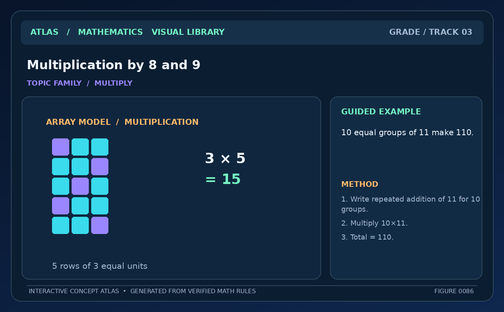
10 equal groups of 11 make 110.
- Write repeated addition of 11 for 10 groups.
- Multiply 10×11.
- Total = 110.
What is 11×11?
Hint: Use an area model or multiply each part.
Show answer and verify
121
Check the units, inputs and intermediate steps. Different solution methods may be valid.
Distributive property
Distributive property: Multiplication counts equal groups and can be visualized as rectangular arrays. Use the distributive property to break a product into smaller products.
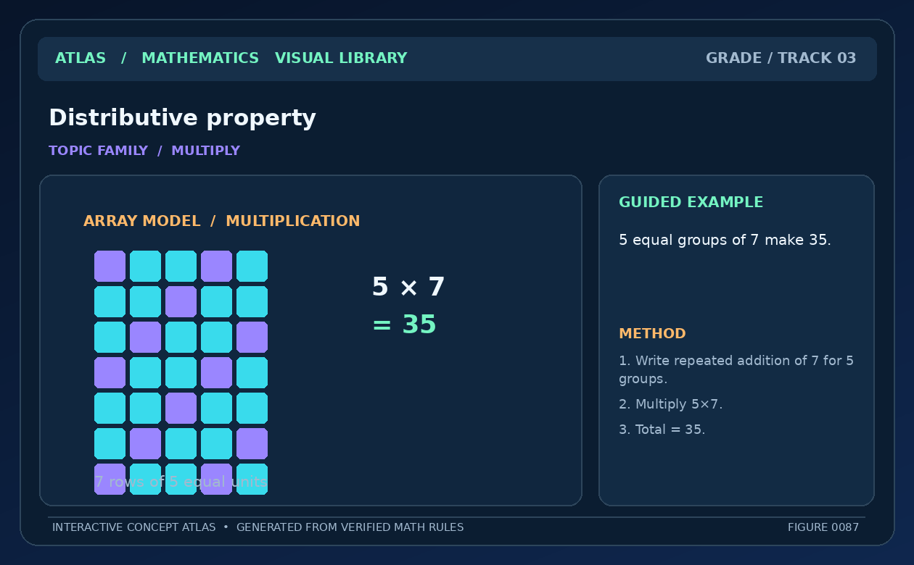
5 equal groups of 7 make 35.
- Write repeated addition of 7 for 5 groups.
- Multiply 5×7.
- Total = 35.
What is 8×7?
Hint: Use an area model or multiply each part.
Show answer and verify
56
Check the units, inputs and intermediate steps. Different solution methods may be valid.
Two-digit times one-digit
Two-digit times one-digit: Multiplication counts equal groups and can be visualized as rectangular arrays. Use the distributive property to break a product into smaller products.
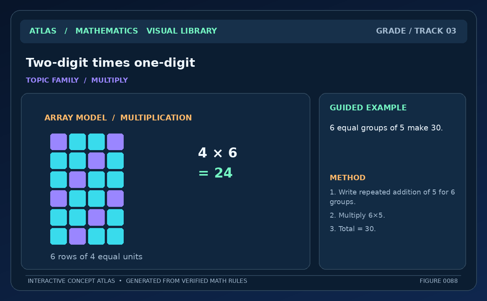
6 equal groups of 5 make 30.
- Write repeated addition of 5 for 6 groups.
- Multiply 6×5.
- Total = 30.
What is 11×5?
Hint: Use an area model or multiply each part.
Show answer and verify
55
Check the units, inputs and intermediate steps. Different solution methods may be valid.
Multiplication with arrays
Multiplication with arrays: Multiplication counts equal groups and can be visualized as rectangular arrays. Use the distributive property to break a product into smaller products.
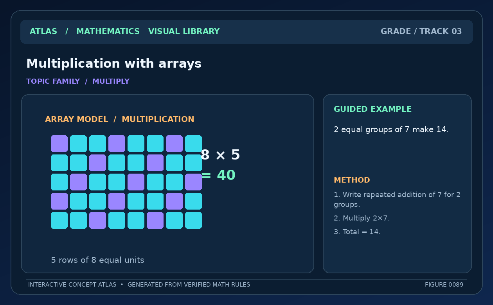
2 equal groups of 7 make 14.
- Write repeated addition of 7 for 2 groups.
- Multiply 2×7.
- Total = 14.
What is 4×7?
Hint: Use an area model or multiply each part.
Show answer and verify
28
Check the units, inputs and intermediate steps. Different solution methods may be valid.
Area model of multiplication
Area model of multiplication: Multiplication counts equal groups and can be visualized as rectangular arrays. Use the distributive property to break a product into smaller products.
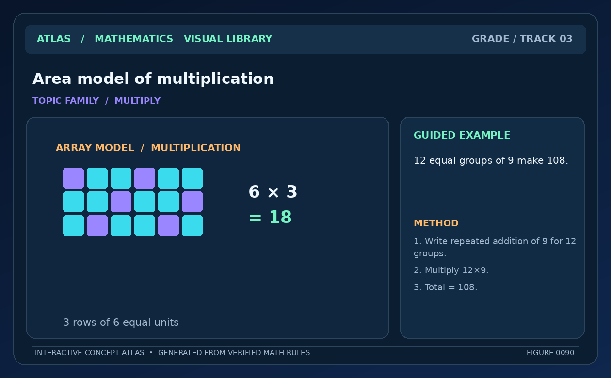
12 equal groups of 9 make 108.
- Write repeated addition of 9 for 12 groups.
- Multiply 12×9.
- Total = 108.
What is 16×9?
Hint: Use an area model or multiply each part.
Show answer and verify
144
Check the units, inputs and intermediate steps. Different solution methods may be valid.
Missing factors
Missing factors: Multiplication counts equal groups and can be visualized as rectangular arrays. Use the distributive property to break a product into smaller products.
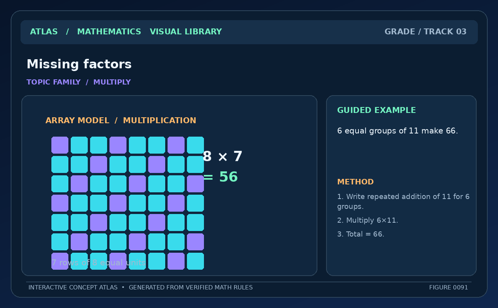
6 equal groups of 11 make 66.
- Write repeated addition of 11 for 6 groups.
- Multiply 6×11.
- Total = 66.
What is 13×11?
Hint: Use an area model or multiply each part.
Show answer and verify
143
Check the units, inputs and intermediate steps. Different solution methods may be valid.
Multiplication word problems
Multiplication word problems: Multiplication counts equal groups and can be visualized as rectangular arrays. Use the distributive property to break a product into smaller products.
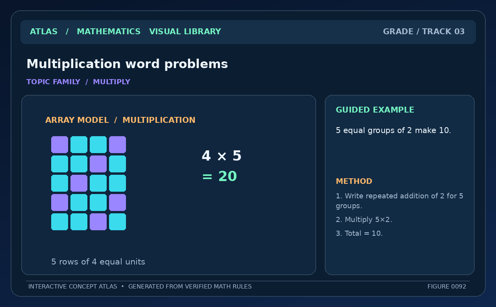
5 equal groups of 2 make 10.
- Write repeated addition of 2 for 5 groups.
- Multiply 5×2.
- Total = 10.
What is 6×2?
Hint: Use an area model or multiply each part.
Show answer and verify
12
Check the units, inputs and intermediate steps. Different solution methods may be valid.
Division as sharing
Division as sharing: Division finds how many equal groups can be made or the size of each group. Check your quotient by multiplying it by the divisor.
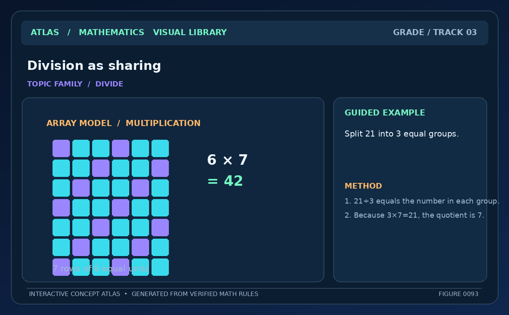
Split 21 into 3 equal groups.
- 21÷3 equals the number in each group.
- Because 3×7=21, the quotient is 7.
Compute 35 ÷ 7.
Hint: Use the inverse multiplication fact.
Show answer and verify
5
Check the units, inputs and intermediate steps. Different solution methods may be valid.
Division as grouping
Division as grouping: Division finds how many equal groups can be made or the size of each group. Check your quotient by multiplying it by the divisor.
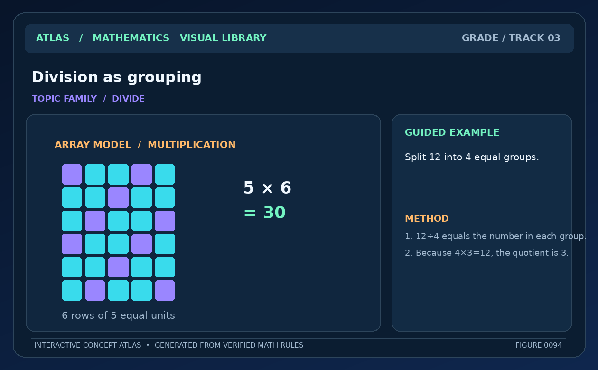
Split 12 into 4 equal groups.
- 12÷4 equals the number in each group.
- Because 4×3=12, the quotient is 3.
Compute 21 ÷ 3.
Hint: Use the inverse multiplication fact.
Show answer and verify
7
Check the units, inputs and intermediate steps. Different solution methods may be valid.
Division fact families
Division fact families: Division finds how many equal groups can be made or the size of each group. Check your quotient by multiplying it by the divisor.
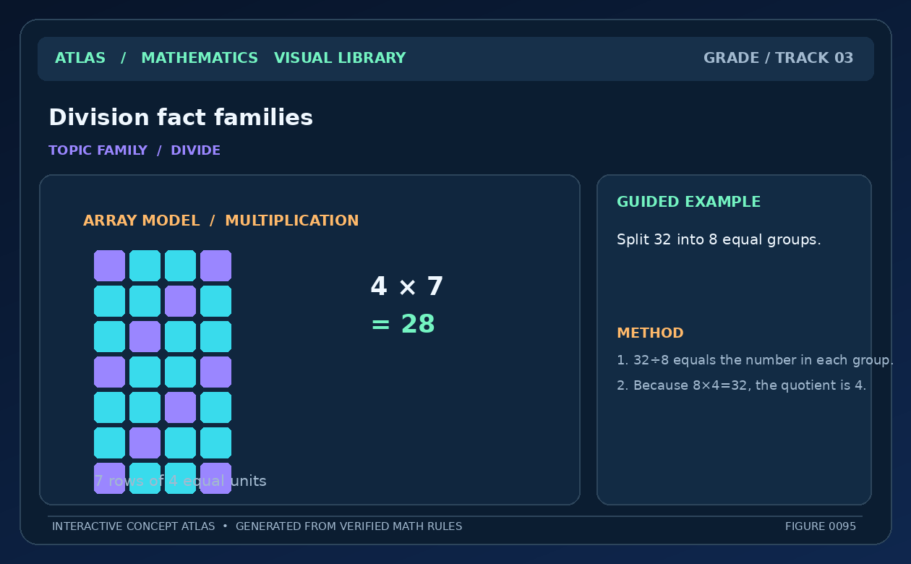
Split 32 into 8 equal groups.
- 32÷8 equals the number in each group.
- Because 8×4=32, the quotient is 4.
Compute 36 ÷ 4.
Hint: Use the inverse multiplication fact.
Show answer and verify
9
Check the units, inputs and intermediate steps. Different solution methods may be valid.
Remainders in everyday contexts
Remainders in everyday contexts: Division finds how many equal groups can be made or the size of each group. Check your quotient by multiplying it by the divisor.
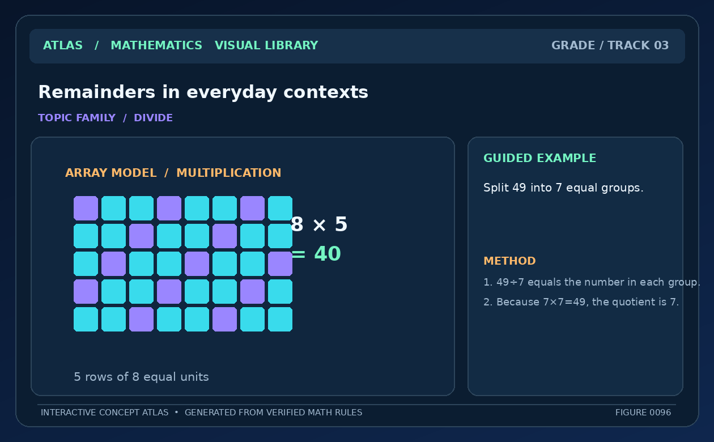
Split 49 into 7 equal groups.
- 49÷7 equals the number in each group.
- Because 7×7=49, the quotient is 7.
Compute 70 ÷ 7.
Hint: Use the inverse multiplication fact.
Show answer and verify
10
Check the units, inputs and intermediate steps. Different solution methods may be valid.
Division with multiplication checks
Division with multiplication checks: Division finds how many equal groups can be made or the size of each group. Check your quotient by multiplying it by the divisor.
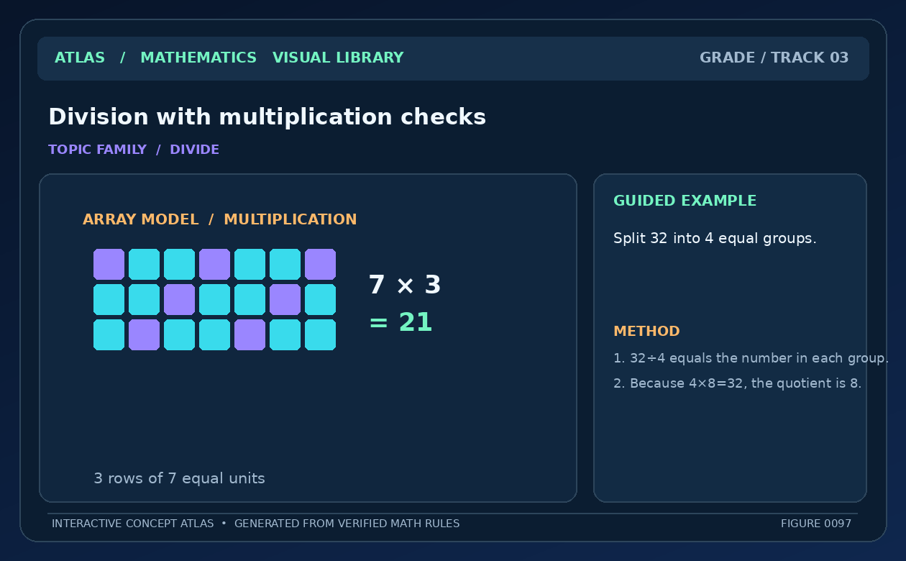
Split 32 into 4 equal groups.
- 32÷4 equals the number in each group.
- Because 4×8=32, the quotient is 8.
Compute 64 ÷ 8.
Hint: Use the inverse multiplication fact.
Show answer and verify
8
Check the units, inputs and intermediate steps. Different solution methods may be valid.
One-digit quotients
One-digit quotients: Division finds how many equal groups can be made or the size of each group. Check your quotient by multiplying it by the divisor.
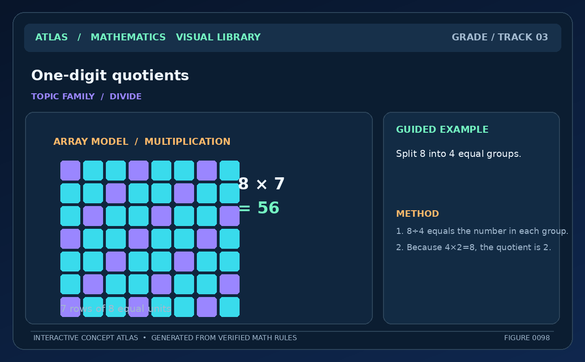
Split 8 into 4 equal groups.
- 8÷4 equals the number in each group.
- Because 4×2=8, the quotient is 2.
Compute 18 ÷ 2.
Hint: Use the inverse multiplication fact.
Show answer and verify
9
Check the units, inputs and intermediate steps. Different solution methods may be valid.
Division word problems
Division word problems: Division finds how many equal groups can be made or the size of each group. Check your quotient by multiplying it by the divisor.
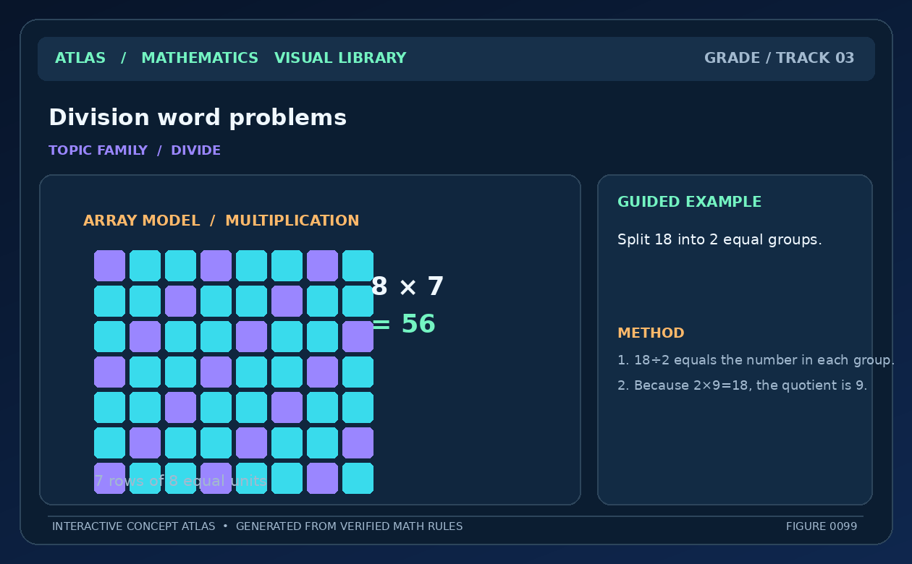
Split 18 into 2 equal groups.
- 18÷2 equals the number in each group.
- Because 2×9=18, the quotient is 9.
Compute 63 ÷ 9.
Hint: Use the inverse multiplication fact.
Show answer and verify
7
Check the units, inputs and intermediate steps. Different solution methods may be valid.
Fractions as unit parts
Fractions as unit parts: Use the numerator for selected parts and denominator for equal pieces in the whole. Equivalent fractions are obtained by multiplying numerator and denominator by the same nonzero factor.
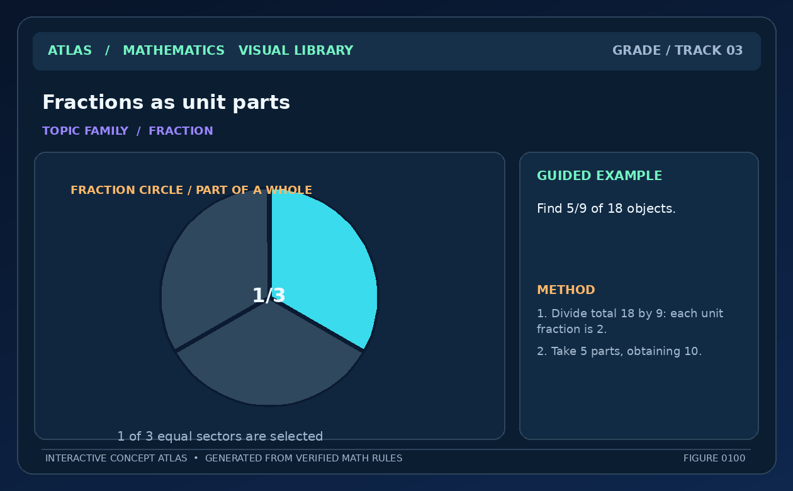
Find 5/9 of 18 objects.
- Divide total 18 by 9: each unit fraction is 2.
- Take 5 parts, obtaining 10.
Find 4/9 of 18 objects.
Hint: First find the value of one equal part.
Show answer and verify
8
Check the units, inputs and intermediate steps. Different solution methods may be valid.
Unit fractions on number lines
Unit fractions on number lines: Use the numerator for selected parts and denominator for equal pieces in the whole. Equivalent fractions are obtained by multiplying numerator and denominator by the same nonzero factor.
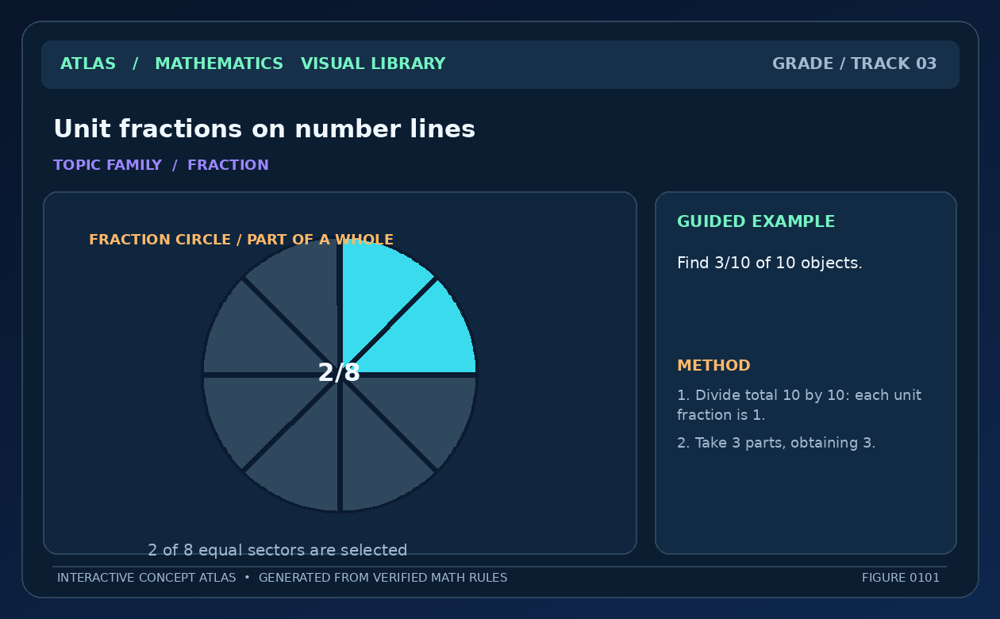
Find 3/10 of 10 objects.
- Divide total 10 by 10: each unit fraction is 1.
- Take 3 parts, obtaining 3.
Find 7/10 of 10 objects.
Hint: First find the value of one equal part.
Show answer and verify
7
Check the units, inputs and intermediate steps. Different solution methods may be valid.
Equivalent fractions with models
Equivalent fractions with models: Use the numerator for selected parts and denominator for equal pieces in the whole. Equivalent fractions are obtained by multiplying numerator and denominator by the same nonzero factor.
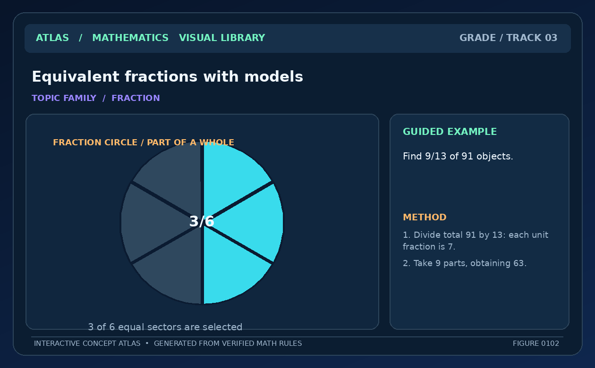
Find 9/13 of 91 objects.
- Divide total 91 by 13: each unit fraction is 7.
- Take 9 parts, obtaining 63.
Find 4/13 of 91 objects.
Hint: First find the value of one equal part.
Show answer and verify
28
Check the units, inputs and intermediate steps. Different solution methods may be valid.
Comparing fractions with equal numerators
Comparing fractions with equal numerators: Use the numerator for selected parts and denominator for equal pieces in the whole. Equivalent fractions are obtained by multiplying numerator and denominator by the same nonzero factor.
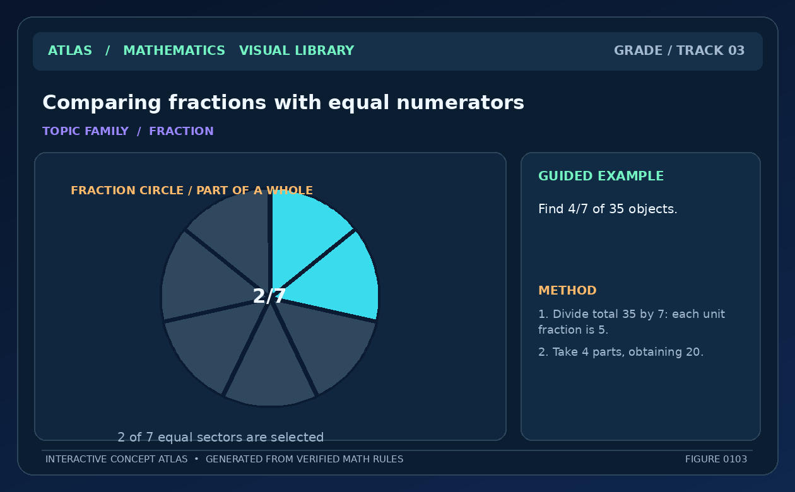
Find 4/7 of 35 objects.
- Divide total 35 by 7: each unit fraction is 5.
- Take 4 parts, obtaining 20.
Find 3/7 of 35 objects.
Hint: First find the value of one equal part.
Show answer and verify
15
Check the units, inputs and intermediate steps. Different solution methods may be valid.
Comparing fractions with equal denominators
Comparing fractions with equal denominators: Use the numerator for selected parts and denominator for equal pieces in the whole. Equivalent fractions are obtained by multiplying numerator and denominator by the same nonzero factor.
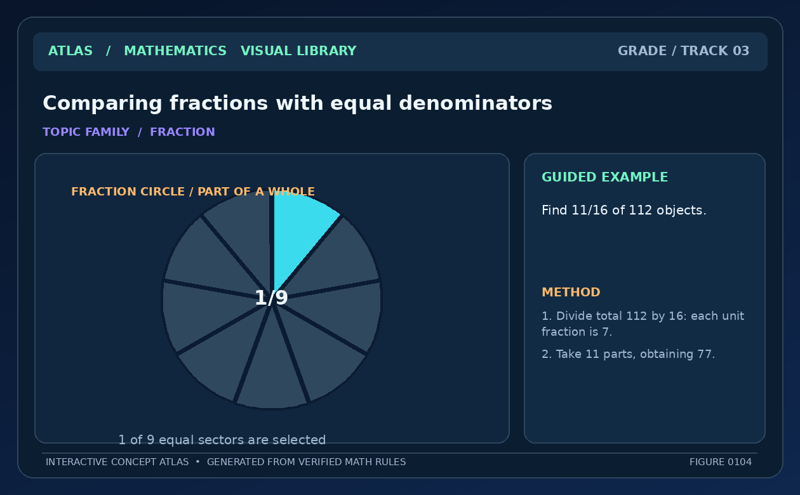
Find 11/16 of 112 objects.
- Divide total 112 by 16: each unit fraction is 7.
- Take 11 parts, obtaining 77.
Find 5/16 of 112 objects.
Hint: First find the value of one equal part.
Show answer and verify
35
Check the units, inputs and intermediate steps. Different solution methods may be valid.
Fractions greater than one
Fractions greater than one: Use the numerator for selected parts and denominator for equal pieces in the whole. Equivalent fractions are obtained by multiplying numerator and denominator by the same nonzero factor.
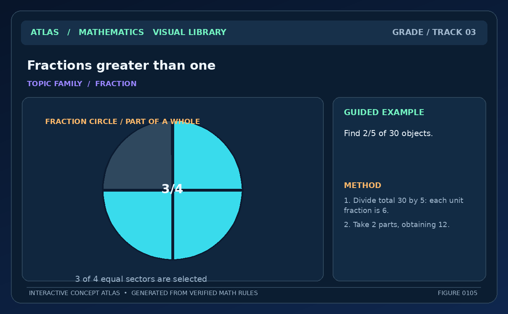
Find 2/5 of 30 objects.
- Divide total 30 by 5: each unit fraction is 6.
- Take 2 parts, obtaining 12.
Find 3/5 of 30 objects.
Hint: First find the value of one equal part.
Show answer and verify
18
Check the units, inputs and intermediate steps. Different solution methods may be valid.
Fraction of a set
Fraction of a set: Use the numerator for selected parts and denominator for equal pieces in the whole. Equivalent fractions are obtained by multiplying numerator and denominator by the same nonzero factor.
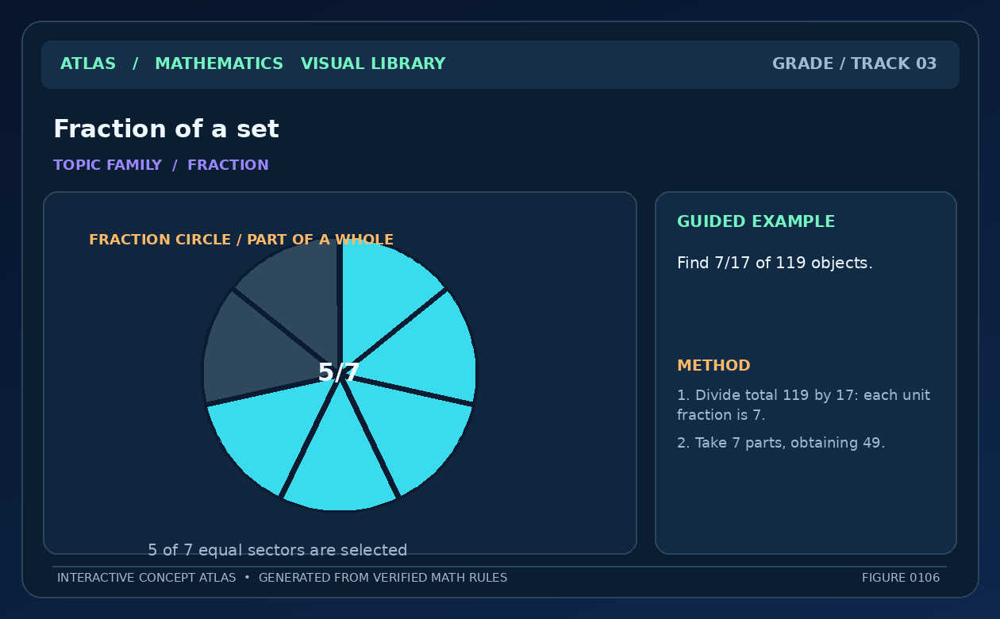
Find 7/17 of 119 objects.
- Divide total 119 by 17: each unit fraction is 7.
- Take 7 parts, obtaining 49.
Find 10/17 of 119 objects.
Hint: First find the value of one equal part.
Show answer and verify
70
Check the units, inputs and intermediate steps. Different solution methods may be valid.
Perimeter of polygons
Perimeter of polygons: Convert by applying a consistent unit factor; write units in every step. An equivalent measurement has a different number but represents the same magnitude.
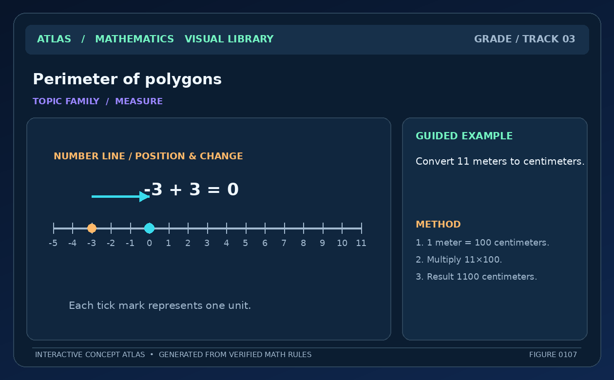
Convert 11 meters to centimeters.
- 1 meter = 100 centimeters.
- Multiply 11×100.
- Result 1100 centimeters.
7 meters equals how many centimeters?
Hint: Multiply meters by 100.
Show answer and verify
700
Check the units, inputs and intermediate steps. Different solution methods may be valid.
Area of rectangles
Area of rectangles: Convert by applying a consistent unit factor; write units in every step. An equivalent measurement has a different number but represents the same magnitude.
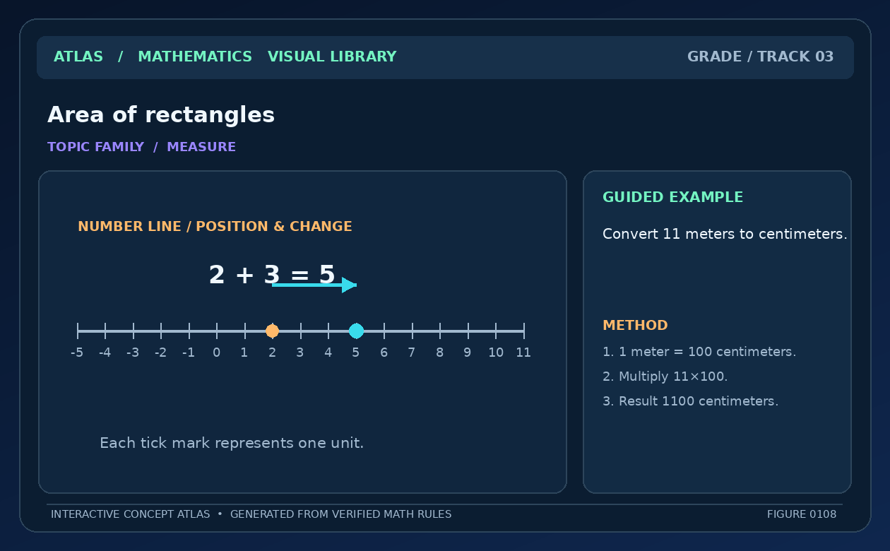
Convert 11 meters to centimeters.
- 1 meter = 100 centimeters.
- Multiply 11×100.
- Result 1100 centimeters.
8 meters equals how many centimeters?
Hint: Multiply meters by 100.
Show answer and verify
800
Check the units, inputs and intermediate steps. Different solution methods may be valid.
Area using unit squares
Area using unit squares: Convert by applying a consistent unit factor; write units in every step. An equivalent measurement has a different number but represents the same magnitude.
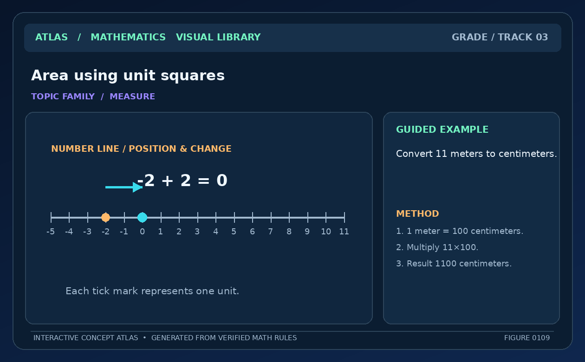
Convert 11 meters to centimeters.
- 1 meter = 100 centimeters.
- Multiply 11×100.
- Result 1100 centimeters.
10 meters equals how many centimeters?
Hint: Multiply meters by 100.
Show answer and verify
1000
Check the units, inputs and intermediate steps. Different solution methods may be valid.
Metric unit conversions
Metric unit conversions: Convert by applying a consistent unit factor; write units in every step. An equivalent measurement has a different number but represents the same magnitude.
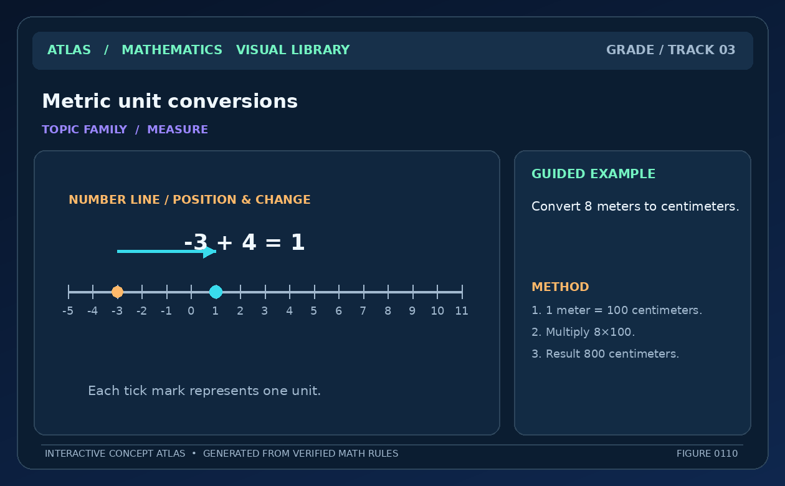
Convert 8 meters to centimeters.
- 1 meter = 100 centimeters.
- Multiply 8×100.
- Result 800 centimeters.
4 meters equals how many centimeters?
Hint: Multiply meters by 100.
Show answer and verify
400
Check the units, inputs and intermediate steps. Different solution methods may be valid.
Elapsed time through noon
Elapsed time through noon: Convert hours to minutes by multiplying by 60, then add or subtract durations. Using one unit first prevents mismatched time arithmetic.
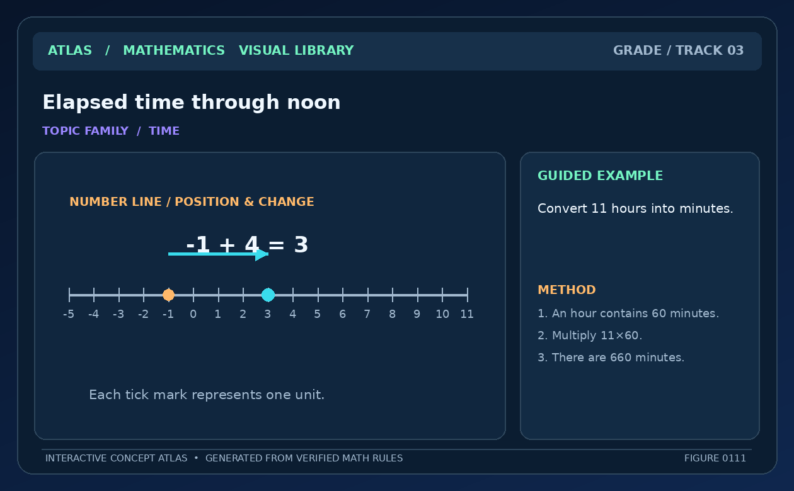
Convert 11 hours into minutes.
- An hour contains 60 minutes.
- Multiply 11×60.
- There are 660 minutes.
How many minutes in 8 hours?
Hint: Multiply the hours by sixty.
Show answer and verify
480
Check the units, inputs and intermediate steps. Different solution methods may be valid.
Reading schedules
Reading schedules: Convert hours to minutes by multiplying by 60, then add or subtract durations. Using one unit first prevents mismatched time arithmetic.
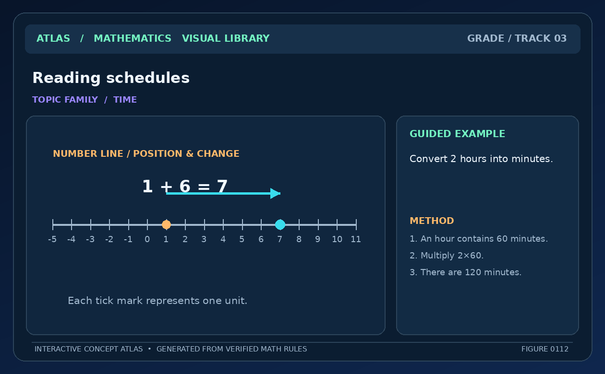
Convert 2 hours into minutes.
- An hour contains 60 minutes.
- Multiply 2×60.
- There are 120 minutes.
How many minutes in 11 hours?
Hint: Multiply the hours by sixty.
Show answer and verify
660
Check the units, inputs and intermediate steps. Different solution methods may be valid.
Time durations in minutes
Time durations in minutes: Convert hours to minutes by multiplying by 60, then add or subtract durations. Using one unit first prevents mismatched time arithmetic.
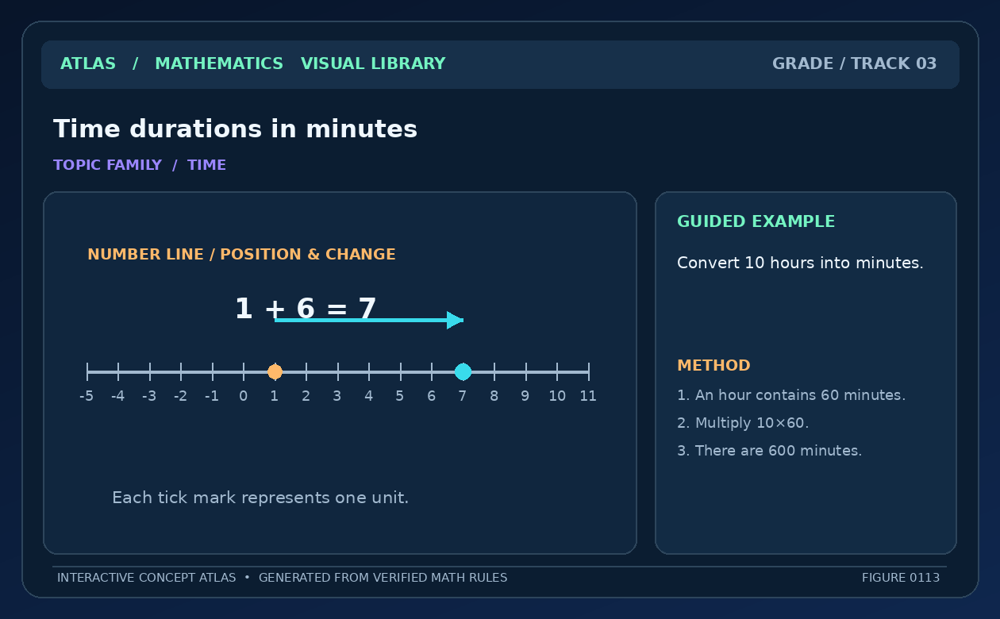
Convert 10 hours into minutes.
- An hour contains 60 minutes.
- Multiply 10×60.
- There are 600 minutes.
How many minutes in 5 hours?
Hint: Multiply the hours by sixty.
Show answer and verify
300
Check the units, inputs and intermediate steps. Different solution methods may be valid.
Classifying angles
Classifying angles: Sketch and label known lengths, angles and shape properties before calculating. A valid geometric argument uses definitions and established properties.
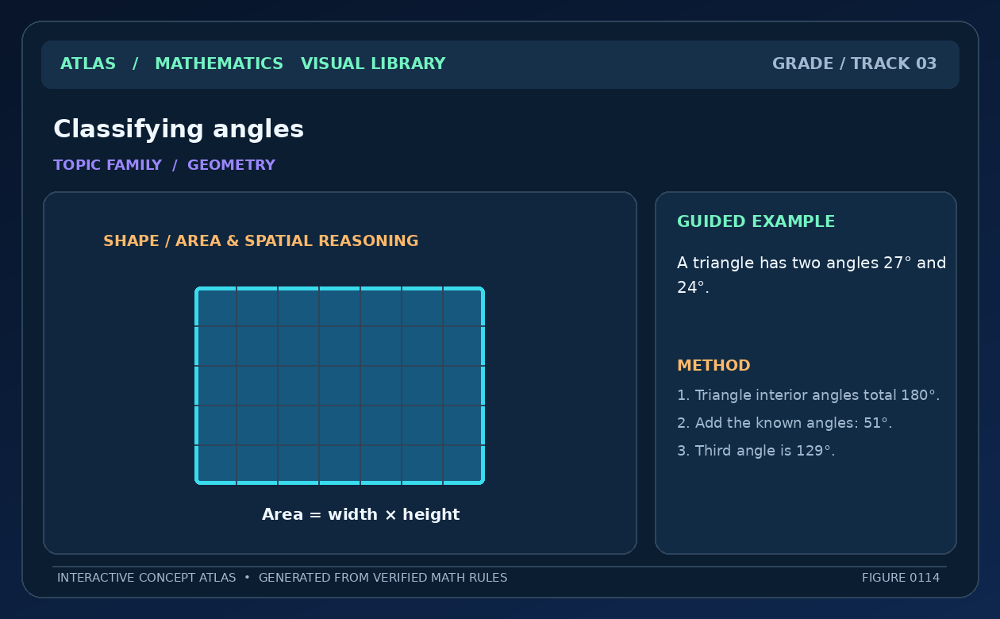
A triangle has two angles 27° and 24°.
- Triangle interior angles total 180°.
- Add the known angles: 51°.
- Third angle is 129°.
A triangle has angles 18° and 18°. Find the third.
Hint: Interior triangle angles sum to 180 degrees.
Show answer and verify
144
Check the units, inputs and intermediate steps. Different solution methods may be valid.
Quadrilateral attributes
Quadrilateral attributes: Sketch and label known lengths, angles and shape properties before calculating. A valid geometric argument uses definitions and established properties.
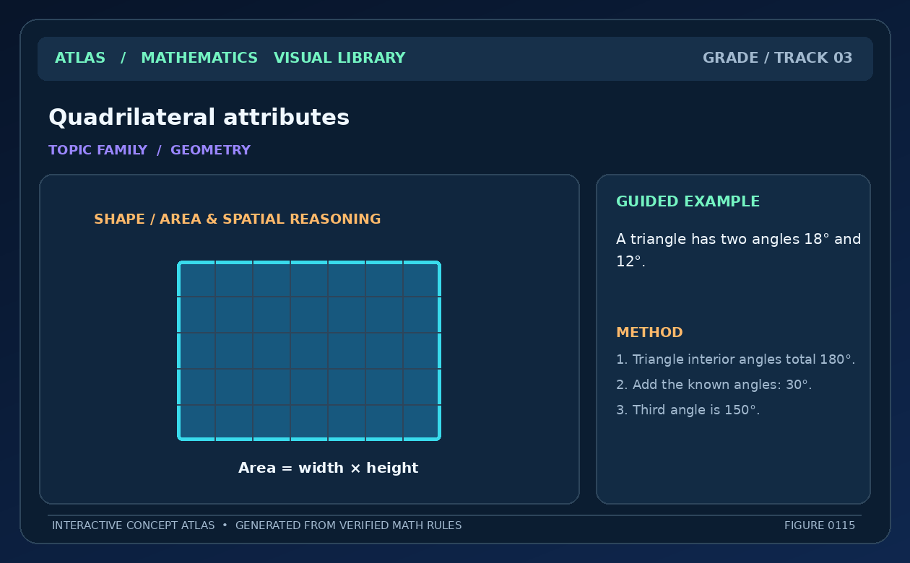
A triangle has two angles 18° and 12°.
- Triangle interior angles total 180°.
- Add the known angles: 30°.
- Third angle is 150°.
A triangle has angles 12° and 9°. Find the third.
Hint: Interior triangle angles sum to 180 degrees.
Show answer and verify
159
Check the units, inputs and intermediate steps. Different solution methods may be valid.
Parallel and perpendicular lines
Parallel and perpendicular lines: Sketch and label known lengths, angles and shape properties before calculating. A valid geometric argument uses definitions and established properties.
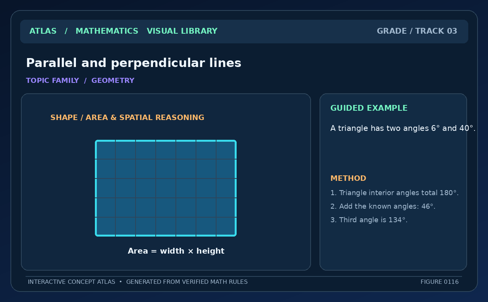
A triangle has two angles 6° and 40°.
- Triangle interior angles total 180°.
- Add the known angles: 46°.
- Third angle is 134°.
A triangle has angles 4° and 30°. Find the third.
Hint: Interior triangle angles sum to 180 degrees.
Show answer and verify
146
Check the units, inputs and intermediate steps. Different solution methods may be valid.
Symmetry of polygons
Symmetry of polygons: Sketch and label known lengths, angles and shape properties before calculating. A valid geometric argument uses definitions and established properties.
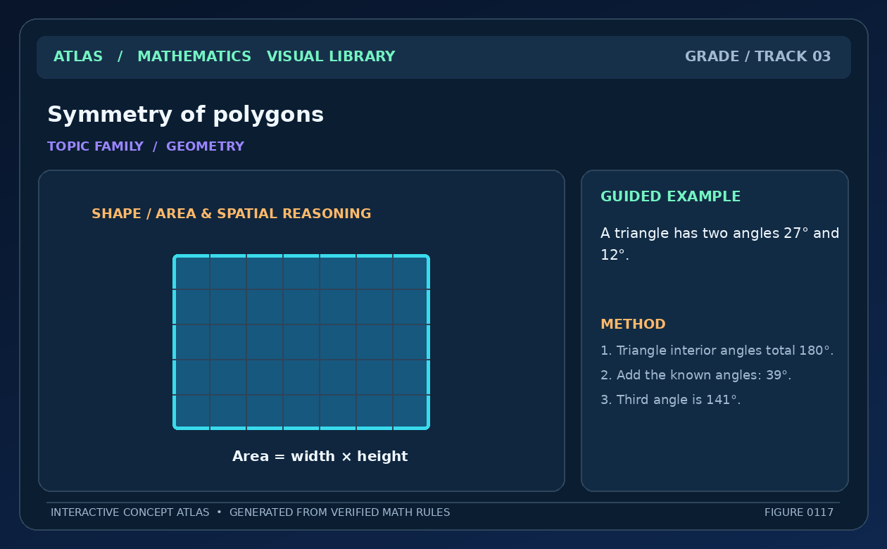
A triangle has two angles 27° and 12°.
- Triangle interior angles total 180°.
- Add the known angles: 39°.
- Third angle is 141°.
A triangle has angles 18° and 9°. Find the third.
Hint: Interior triangle angles sum to 180 degrees.
Show answer and verify
153
Check the units, inputs and intermediate steps. Different solution methods may be valid.
Pictographs and bar graphs
Pictographs and bar graphs: Organize observations and distinguish measures of center from measures of spread. The mean is the total divided by the number of observations.
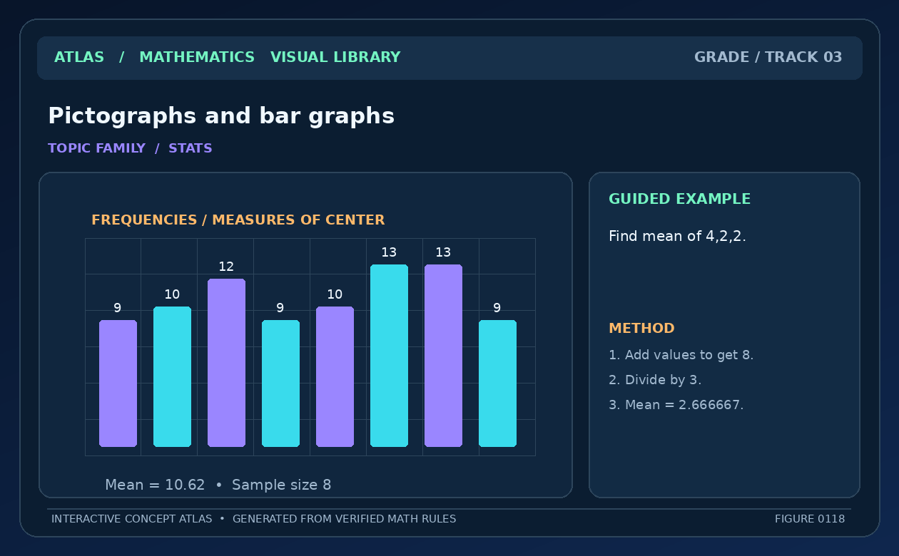
Find mean of 4,2,2.
- Add values to get 8.
- Divide by 3.
- Mean = 2.666667.
Mean of 4,6,8?
Hint: Sum observations and divide by count.
Show answer and verify
6
Check the units, inputs and intermediate steps. Different solution methods may be valid.
Frequency tables
Frequency tables: Organize observations and distinguish measures of center from measures of spread. The mean is the total divided by the number of observations.
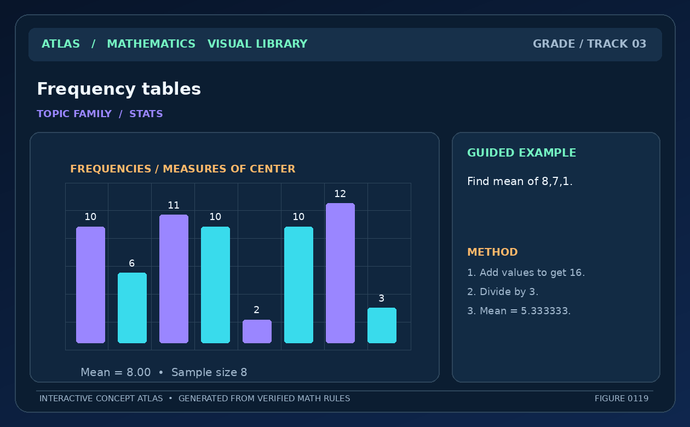
Find mean of 8,7,1.
- Add values to get 16.
- Divide by 3.
- Mean = 5.333333.
Mean of 8,10,12?
Hint: Sum observations and divide by count.
Show answer and verify
10
Check the units, inputs and intermediate steps. Different solution methods may be valid.
Interpreting scaled graphs
Interpreting scaled graphs: Organize observations and distinguish measures of center from measures of spread. The mean is the total divided by the number of observations.
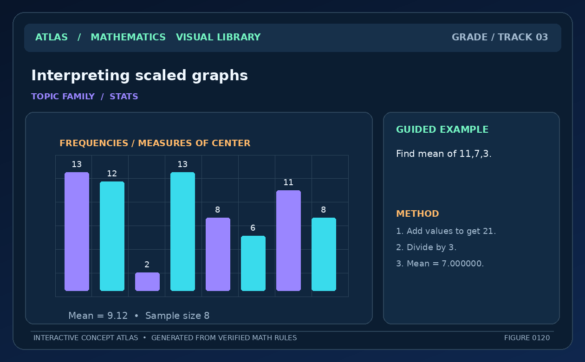
Find mean of 11,7,3.
- Add values to get 21.
- Divide by 3.
- Mean = 7.000000.
Mean of 11,13,15?
Hint: Sum observations and divide by count.
Show answer and verify
13
Check the units, inputs and intermediate steps. Different solution methods may be valid.
Purchase totals and change
Purchase totals and change: Line up currency units and calculate totals or change from known prices. Always label answers in dollars or cents and round monetary results to cents.
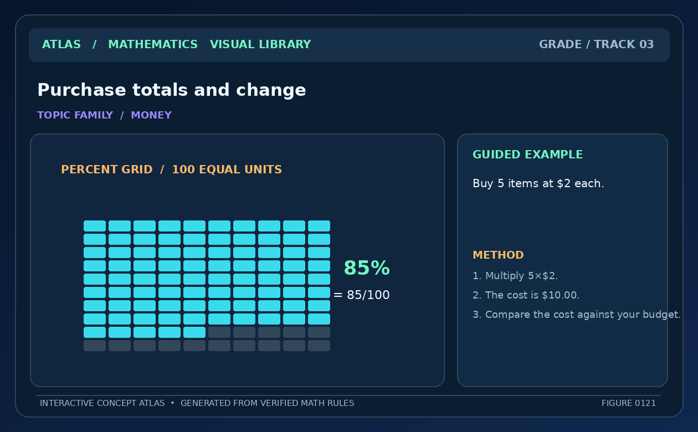
Buy 5 items at $2 each.
- Multiply 5×$2.
- The cost is $10.00.
- Compare the cost against your budget.
What is the dollar cost of 4 items at $3 each?
Hint: Multiply item count by price per item.
Show answer and verify
12
Check the units, inputs and intermediate steps. Different solution methods may be valid.